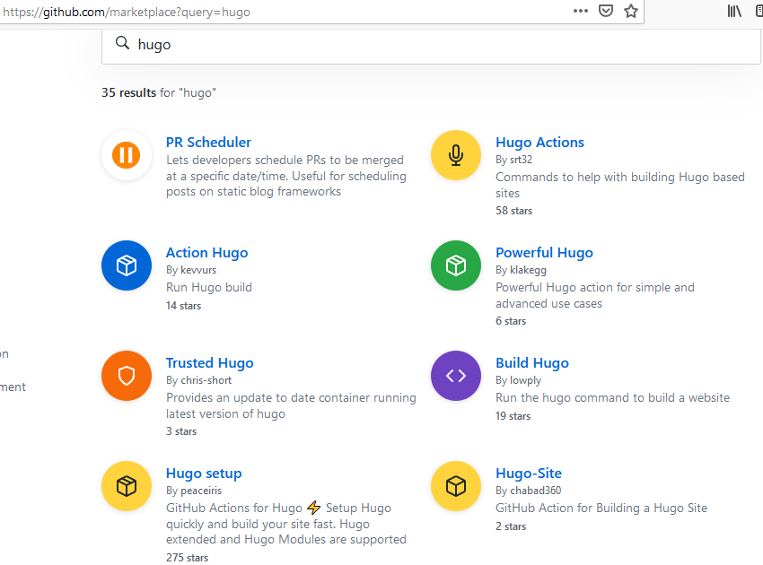

Using Github Actions with Hugo
I really like the idea of having a process triggered automatically when I push code. Github actions gives a way to do this with Github repositories, and this article was first published with a Github action. While convenient for simple things Github actions seem hard to customise, heavyweight to configure and give me security concerns.
My workflow for publishing this website used to be commit and push the changes and run a deploy script. When I used a different laptop with a more recent version of Hugo this resulted in some issues, and it wasn’t easy for me to use the earlier version from my package manager. While I could use something like Docker this was a good excuse to automatically get a properly configured server to publish automatically.
You could long do this with a git post-receive hook on a self-hosted server or Gitlab CI or other CI tools. Recently Github released Actions which can do this (and also trigger on other Github events).
The documentation for Github Actions is pretty dense, describing each part in detail with no high-level howtos. After reading it for a couple of hours I understood enough to string together some marketplace actions into a workflow.
In my Github repository, in the “Actions” section, it has some prompts to get started. It suggested a Jekyll workflow (which is odd for a Hugo blog), so I searched the Marketplace for Hugo. It’s really hard to decide from the search results what I should to use, and strangely it’s not quite ranked by number of stars.

I read a the detail pages of a few, and Hugo Setup which had the most stars seemed to do what I needed. It has good documentation including a sample on how to publish to Github pages. A great feature is that I can specify the Hugo version, so my website won’t be broken immediately by changes to Hugo.
However I don’t use Github Pages and I’ve been syncing the output with rclone. I couldn’t figure out how to do this directly, so I went back to the marketplace to find github action for rclone. I could store my rclone configuration as a Github secret called RCLONE_CONF (under Settings > Secrets) and then inject it into the Github workflow file using ${{ secrets.RCLONE_CONF }}.
This is where I stopped to think; can the action author steal my secrets? So I read the source code, which was thankfully straightforward, and saw that if I assume https://rclone.org is secure and that the code the action executes is the same as the source then it should be secure. I don’t know if there’s any way to guarantee that I continue to use this version, or if there’s any vetting of marketplace code.
Together this gave me a Github workflow to build and publish this website (except rebuilding blogdown posts). Overall the experience seems with Github actions seems to push the Marketplace, which is not really easy to understand and it feels clunky to compose actions when compared to composing scripts on Linux. For something this simple where actions existed it was straightforward, but for something more complex I would have to write my own action. The rclone action shows this could be straightforward with Docker, but the hugo action shows it can get quite involved.
From a strategic position I can understand why Github is pushing the marketplace so hard. Gitlab has had a much better CI story for a long time (and as far as I can tell still does today), but Github has a far larger community. By leveraging the community to build useful actions and encouraging developers to use them for free will help get developers started with it. By encouraging chaining together lots of actions into workflows (which seems to be the fundamental design) will make it really difficult to migrate to another CI tool once you have complex workflows. Then they can monetise on projects that exceed the free quotas.
For me the next step would be to try to write a Docker action which I should then be able to use on any linux server. The specific benefits of the Github action ecosystem currently seem low, and it is less mature than other CI tools. But it’s a useful free tool to have access to if you’re using Github for hosting code.